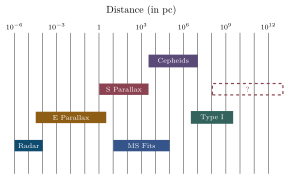
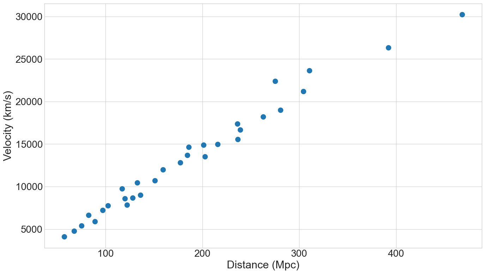
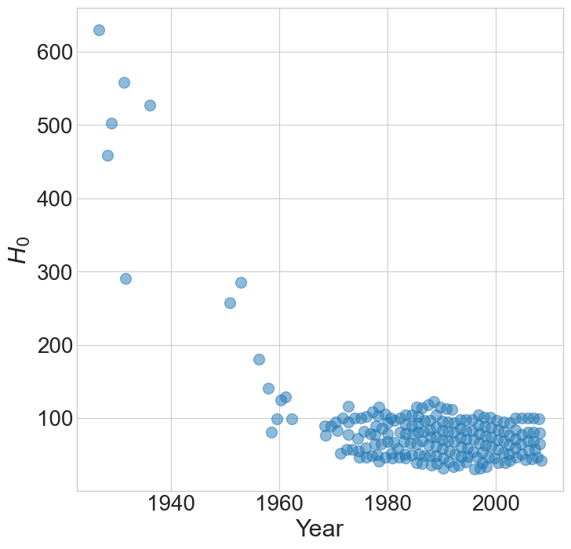
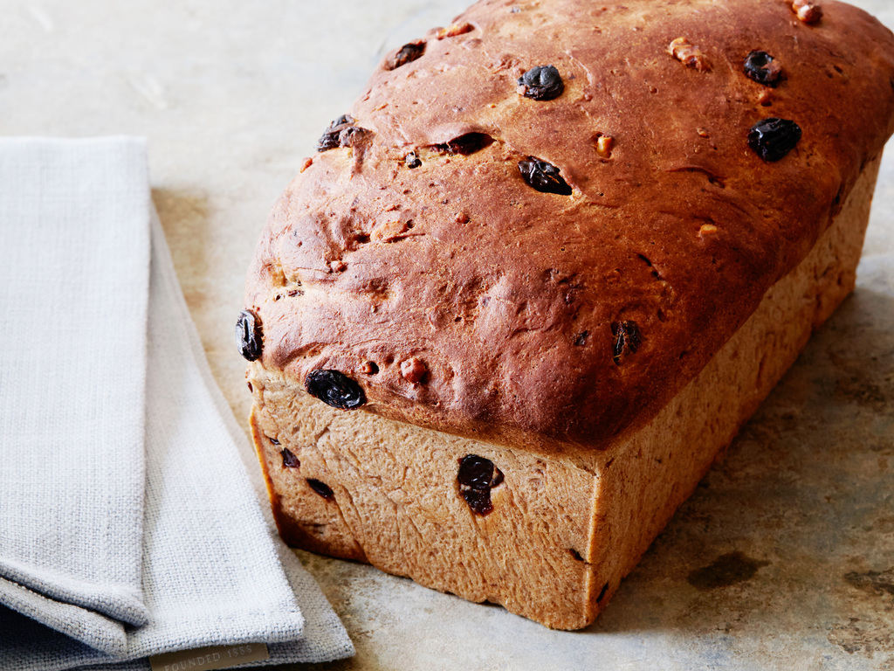
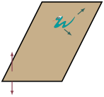
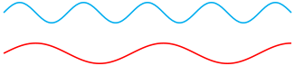
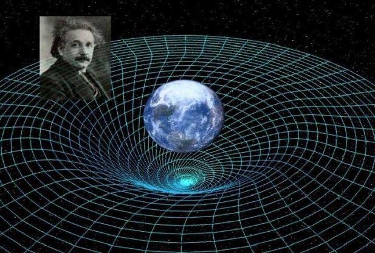

Jed Rembold
April 24, 2023
emcee package, which you will probably need
to install through pipEmcee operates as an abstract data type,
wherein you create a sampling object and then can interact with it and
run samples using defined methodssampler = emcee.EnsembleSampler(
num_walkers, num_dims,
log_function, args=[extra arguments]
)You can then start a sampling run by telling the sampler where all the walkers should begin and how many steps they should take
Generating starting points usually done with some variation of a random gaussian near a starting point:
starts = np.random.multivariate_normal(
mean = [0,1,10],
cov = [[1,0,0],[0,0.5,0], [0,0,5]]
)Then you can just run the sampler:
sampler.run_mcmc(starts, num_iterations)You can get the iteration chains back from the sampler after a
run using .get_chain()
This will usually return a 3D array, indexing over the parameter, walker, and iteration
Can visualize a particular parameter over all walkers using
plt.plot(sampler.get_chain()[:,:,0], 'k', alpha=0.3)After examining, will commonly want to discard the burn in and flatten all the individual walkers:
flat_samples = sampler.get_chain(discard=num_dis,
flat=True)corner package
corner will automatically generate both
individual parameter distributions and all pair-wise 2D histogramsaxis=0
The more distant an object is, the faster it is moving away from us!






\[R_{ab}-\frac{1}{2}Rg_{ab} = -8\pi T_{ab} + \Lambda g_{ab}\]